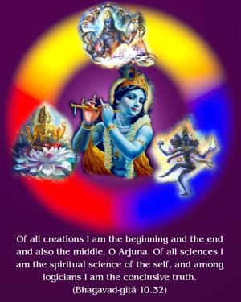
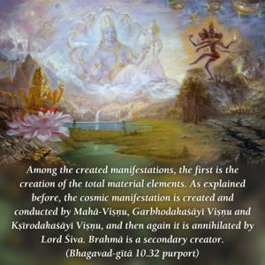
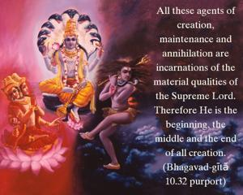
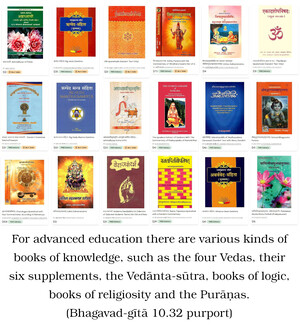

Of all creations I am the beginning and the end and also the middle, O Arjuna. Of all sciences I am the spiritual science of the self, and among logicians I am the conclusive truth.




Among the created manifestations, the first is the creation of the total material elements. As explained before, the cosmic manifestation is created and conducted by Mahā-viṣṇu, Garbhodaka-śāyī Viṣṇu and Kṣīrodaka-śāyī Viṣṇu, and then again it is annihilated by Lord Śiva. Brahmā is a secondary creator. All these agents of creation, maintenance and annihilation are incarnations of the material qualities of the Supreme Lord. Therefore He is the beginning, the middle and the end of all creation.
For advanced education there are various kinds of books of knowledge, such as the four Vedas, their six supplements, the Vedānta-sūtra, books of logic, books of religiosity and the Purāṇas. So all together there are fourteen divisions of books of education. Of these, the book which presents adhyātma-vidyā, spiritual knowledge – in particular, the Vedānta-sūtra – represents Kṛṣṇa.
Among logicians there are different kinds of argument. Supporting one’s argument with evidence that also supports the opposing side is called jalpa. Merely trying to defeat one’s opponent is called vitaṇḍā. But the actual conclusion is called vāda. This conclusive truth is a representation of Kṛṣṇa.